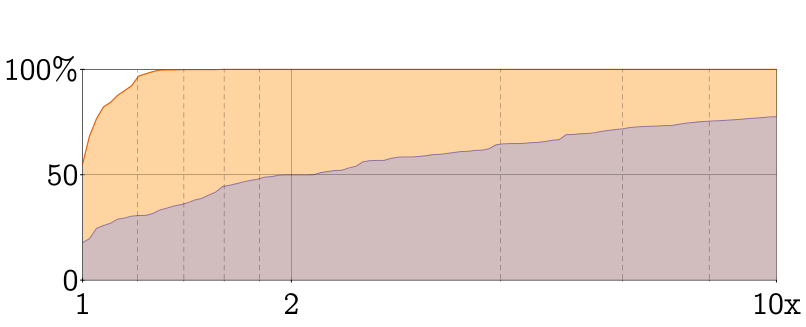
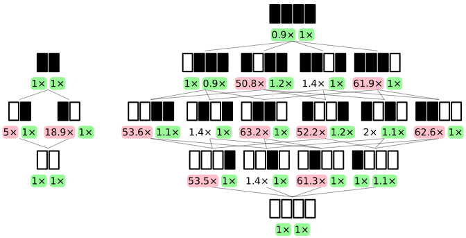
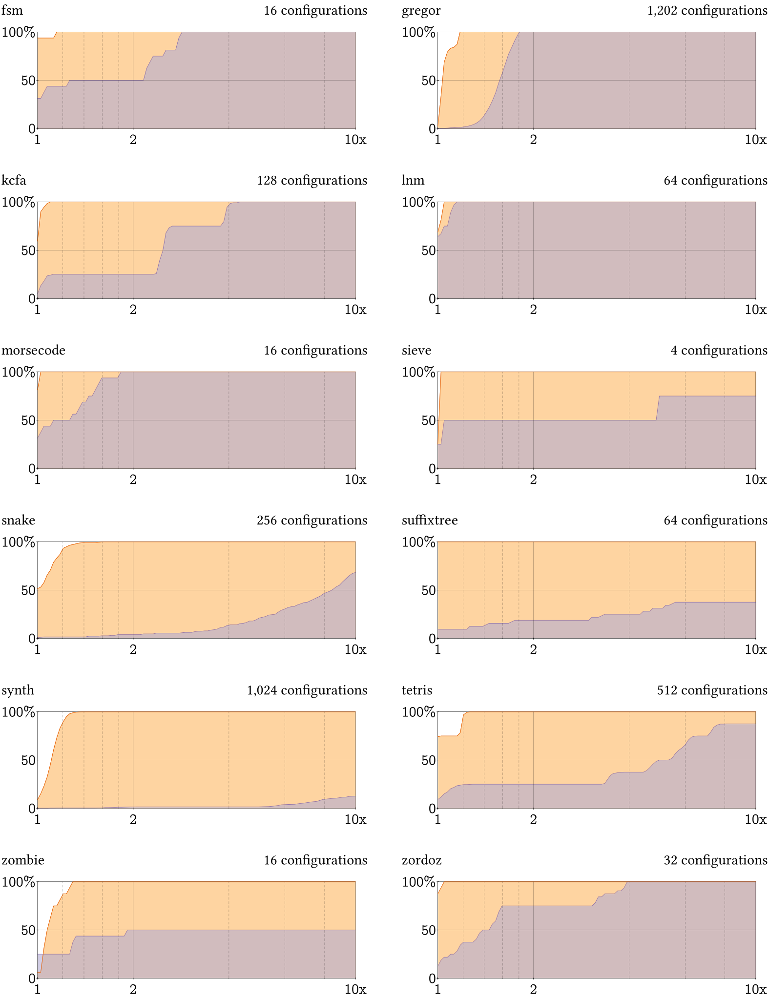

Artifact: Corpse Reviver
This artifact accompanies the paper “Corpse Reviver: Sound and Efficient Gradual Typing via Contract Verification.” Artifact evaluation phase I consists of the Install and Optimizing a program sections. Artifact evaluation phase II consists of the Benchmark and Empirical results sections.
1 Install
You can run the artifact in a VirtualBox virtual machine that includes all the necessary dependencies. We recommend this method of installation. Alternatively, you can manually install the artifact on any Unix-like operating system.
1.1 VirtualBox
Download VirtualBox.
Download the artifact’s virtual machine image.
Open VirtualBox, choose File → Import Appliance, select the downloaded ova file, and start the virtual machine. The username and password are both scvcr.
- Open a terminal window and change to the artifact directory.
$ cd ~/corpse-reviver/corpse-reviver-artifact
1.2 Manual
Install Racket 7.8.
- Run the following commands to download and install SCV-CR:
$ git clone https://github.com/camoy/corpse-reviver
$ raco pkg install corpse-reviver/corpse-reviver-artifact \
corpse-reviver/corpse-reviver-benchmark \
corpse-reviver/corpse-reviver
- Change to the artifact directory.
$ cd corpse-reviver/corpse-reviver-artifact
2 Optimizing a program
You can write your own gradually typed program and see how well SCV-CR can optimize it. Within the artifact directory there is an examples/ subdirectory with some files. Change to this directory. A file called data.rkt has the following code:
#lang typed/racket/base (provide random-adders) (: random-adders : (-> Natural (Listof (-> Integer Integer)))) (define (random-adders n) (for/list ([i (in-range n)]) (λ ([x : Integer]) (+ (random 10) x))))
This typed module provides a function called random-adders that generates a list of random “adders,” functions that add its argument to a random number. A file called main.rkt has the following code:
#lang racket/base (require "data.rkt") (define iterations 1000) (define n 5000) (time (for ([i (in-range iterations)]) (for/sum ([f (in-list (random-adders n))]) (f (random 10)))))
This untyped module generates a list of 5,000 adders from data.rkt and computes a sum with them. It does this for 1,000 iterations and measures how long it takes.
Run the program and use Racket’s profiler to see the cost of contracts due to gradual typing. On our machine, the program takes about 10 seconds with about 67% of that time due to contract checking.
$ raco make data.rkt main.rkt |
$ racket main.rkt |
cpu time: 9398 real time: 9412 gc time: 874 |
$ raco contract-profile main.rkt |
Running time is 66.66% contracts |
8014/12022 ms |
|
(-> natural? (listof (-> exact-integer? any))) 8013.5 ms |
data.rkt:3:9 |
random-adders 8013.5 ms |
$ raco decompile main.rkt > unopt.rkt |
Run SCV-CR on the modules first and see the performance difference. In this simple example, the tool proves that the contracts cannot be violated and removes them all automatically.
$ raco scv-cr data.rkt main.rkt |
$ racket main.rkt |
cpu time: 1256 real time: 1258 gc time: 28 |
$ raco contract-profile main.rkt |
cpu time: 1406 real time: 1410 gc time: 8 |
Running time is 0% contracts |
0/2340 ms |
$ raco decompile main.rkt > opt.rkt |
For further confirmation that the contracts were optimized, you can compare the decompiled outputs in unopt.rkt and opt.rkt.
$ diff opt.rkt unopt.rkt | grep "random-adders '5000" -A 2 |
< (let ((local67 (random-adders '5000))) |
--- |
> (let ((local73 (lifted/12.1 '5000))) |
On top is the optimized version that directly calls random-adders. The bottom, by contrast, calls lifted/12.1 instead. If you chase down this definition, it is the contracted version of random-adders.
If SCV is unable to prove that a contract won’t be violated, then that contract is not removed. A file called main-imprecise.rkt has the following code:
#lang racket/base (require "data.rkt") (define iterations 1000) (define n 5000) (time (for ([i (in-range iterations)]) (for/sum ([f (in-list (random-adders n))]) (f (if (string<=? "a" "b") (random 10) "")))))
The only difference between main.rkt and main-imprecise.rkt is that the imprecise version contains a conditional that will violate the type of random-adders if the string a is not lexicographically smaller than the string b. Since it is lexicographically smaller, this branch is never executed and the contract check is unnecessary. However, SCV cannot prove this is so, and thus the contract is not removed.
$ raco scv-cr data.rkt main-imprecise.rkt |
$ racket main-imprecise.rkt |
cpu time: 8041 real time: 8081 gc time: 550 |
$ raco contract-profile main-imprecise.rkt |
cpu time: 9037 real time: 9172 gc time: 522 |
Running time is 72.02% contracts |
7034/9767 ms |
|
(-> natural? (listof (-> exact-integer? any))) 7034 ms |
data.rkt:3:9 |
random-adders 7034 ms |
See the SCV-CR documentation for the full list of options to raco scv-cr.
3 Benchmark
Execute the following commands to run the entire benchmark suite:
$ cd corpse-reviver/corpse-reviver-artifact |
$ raco scv-cr-benchmark -c 5 -b -i 5 -S 2 -R 2 -o data/baseline |
$ raco scv-cr-benchmark -r -o data/opt |
These commands will create a series of
JSON-formatted measurement files—
We have found that on a decent laptop, the benchmarks with these parameters terminate in about 14 hours. If you want to run this script overnight, combine the last two commands with &&.
The suggested flags will sample from larger benchmarks instead of exhaustively measuring them all. Different parameter choices will yield different benchmarking times. Changing -R from 2 to 1 will halve benchmark completion time. We don’t recommend going any lower than this setting. If you want to run the benchmarks for longer, increasing any one of -S, -R, or -c, will result in a more accurate result. See the benchmarking documentation for more information.
After this is done, you can generate this page with your benchmark results.
$ raco setup corpse-reviver-artifact |
$ raco docs T:corpse-reviver-artifact |
When raco docs opens a browser, select the first result. The page you’re currently reading should appear, but the figures and claims in Empirical results will be generated from your data instead of ours (available in the author_data directory).
4 Empirical results
Compare the figures and claims
generated from your benchmarking results
to those generated from ours.
Depending on your choice of parameters,
the results may differ more or less.
However,
they should generally support
the thesis of the paper—
4.1 Figures

Figure 4: Overhead of gradual typing over the whole benchmark suite. The purple () curve is Typed Racket and the orange () curve is SCV-CR. The log-scaled x-axis indicates slowdown factor compared against the fully-untyped configuration, while the y-axis indicates the percent of configurations incurring that slowdown. Each benchmark is allocated an equal proportion of the y-axis. Higher is better.

Figure 5: Performance lattices for sieve (left) and zombie (right). Each point in the lattice is a configuration of the benchmark, where a white box is an untyped module and a black box is a typed module. The numbers below indicate the slowdown factor for Typed Racket 7.8 on the left and SCV-CR on the right.

Figure 6: Overhead of gradual typing for each benchmark individually. The purple curve is Typed Racket and the orange curve is SCV-CR. Each point (x, y) indicates an x-factor slowdown over the fully-untyped configuration for y% of configurations. The dashed lines between 1 and 2 occur at increments of 0.2 and between 2 and 10 at increments of 2.
Figure 7: Exact time it takes each configuration to execute. The purple curve is Typed Racket and the orange curve is SCV-CR. The x-axis is binned by the number of typed modules in a configuration. The y-axis is time to execute in seconds.

Racket Overhead
SCV-CR Overhead
SCV-CR Analyze
SCV-CR Compile
Benchmark
Max
Mean
Max
Mean
Mean ± 𝜎 (s)
Mean ± 𝜎 (s)
fsm
2.8×
1.7×
1.1×
0.7×
25 ± 3
16 ± 4
gregor
2.1×
1.7×
1.3×
1.1×
879 ± 858
52 ± 11
kcfa
4.3×
2.5×
1.1×
1×
35 ± 3
34 ± 4
lnm
1.1×
0.8×
1×
0.7×
125 ± 16
44 ± 6
morsecode
1.8×
1.2×
1×
0.9×
18 ± 9
10 ± 3
sieve
18.6×
6.4×
1×
1×
5 ± 2
4 ± 2
snake
16.4×
8.2×
1.6×
1×
94 ± 43
22 ± 4
suffixtree
32.1×
14.1×
1×
0.8×
28 ± 12
21 ± 4
synth
73.6×
32.6×
1.4×
1.1×
131 ± 51
34 ± 6
tetris
11.1×
5×
1.3×
1×
190 ± 128
25 ± 6
zombie
59.8×
27.8×
1.3×
1.1×
55 ± 19
15 ± 4
zordoz
3.9×
1.8×
1×
0.9×
361 ± 8
66 ± 8
Figure 8: Maximum and mean overhead for Racket 7.8 and SCV-CR for each benchmark. Red indicates a slowdown ≥3× while green indicates a slowdown ≤1.3×.
4.2 Supporting claims
We evaluate this approach on a dozen existing gradually-typed programs previously shown to have prohibitive performance overhead—
with a median overhead of 2.1× and up to 73.6× in the worst case— and eliminate all overhead in most cases and suffer 1.6× in the worst case. For example, Typed Racket 7.8 runs 50% of benchmark configurations with less than 2× slowdown. With SCV-CR, 95% of benchmark configurations have less than 1.2× slowdown compared to the fully-untyped configuration. As this plot makes clear, SCV-CR reduces overhead to nearly zero in almost all cases, and completely eliminates all overheads over 1.6×.
The worst overhead incurred by gradual typing with SCV-CR is a slowdown of 1.6×. Only 44% of benchmark configurations without contract verification are within this slowdown factor, while the largest overhead exceeds 73.6× overhead.
Take the sieve benchmark as an example. The baseline performance begins at 50%, meaning two of the four configurations are within a 1× slowdown of the fully-untyped configuration. From figure 5, these are the fully-untyped configuration itself and the fully-typed configuration. The one-time increase in the CDF shows the configuration that has 5× overhead. We never see the CDF reach 100% since this would occur at 18.6×, beyond the x-axis’s range.
There are no pathological cases and any path through the lattice of configurations from untyped to typed programs exhibit at most 1.6× slowdown.